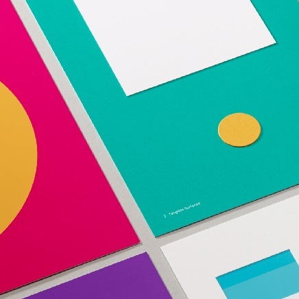

* Copyright 2016 (C)
*
* Author : Jhon Doe
* Description:
* Web Developper/Designer
*---------|---------------|--
/*
* Copyright 2016 (C)
*
* Author : Jhon Doe
* Description:
* Web Developper/Designer
*---------|---------------|--
Hello, I am John Doe
For these html pages, I first followed one of the suggestion links on my CSY1018 links on nile: material.io An Introduction to material design. I used this website as a main reference to style objects on my pages from shadows to the type of colors.

As a result from suggestinon on material.io I tried to build something trendy with vibrant colors. As illustrated by the photo in this card, the colors of the pages come from someone else work. More precisely, this picture is from the google material topic on manualcreative.com.
Finally, I looked for the best design on the web and found Awwward.com
where, I realised that minimalist design with large size vertical navbar launched on click of a menu app button
was very trendy. Hence I tried to implement it on my pages.
I also noticed the popularity of the paralax effect on Awwward.com links and implemented it on my bio page.
I also noticed the popularity of the paralax effect on Awwward.com links and implemented it on my bio page.
My Work
95%
RESEARCH
7%
CODING
40%
DEBUGGING
10%
DESIGNING